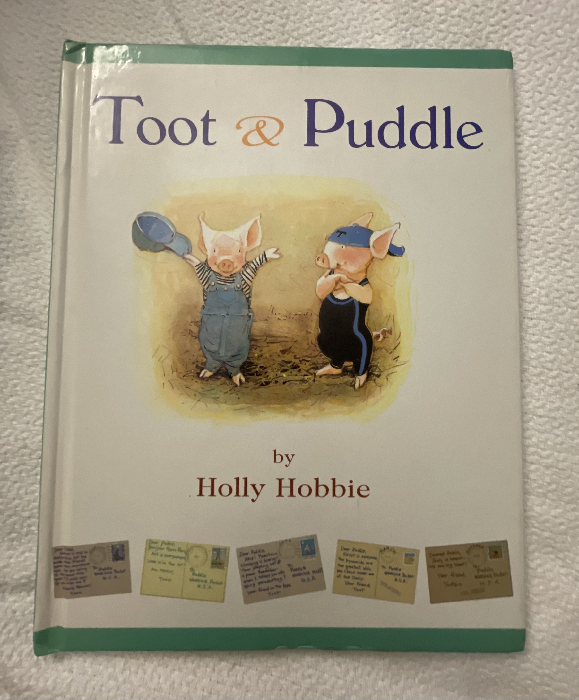
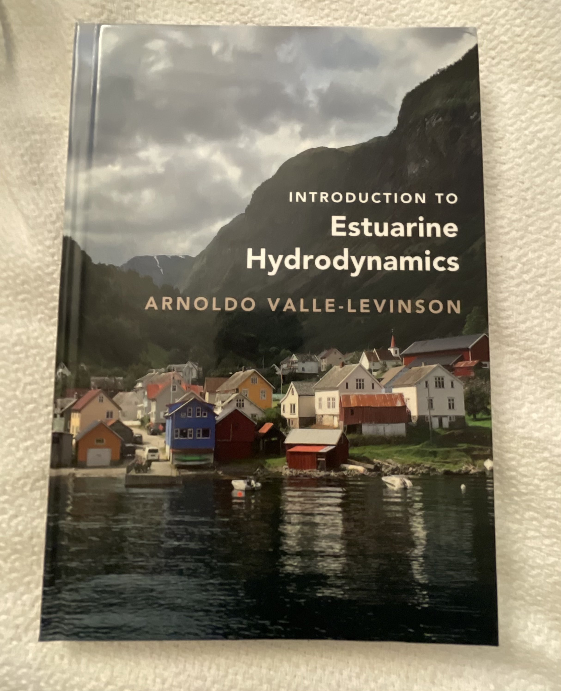
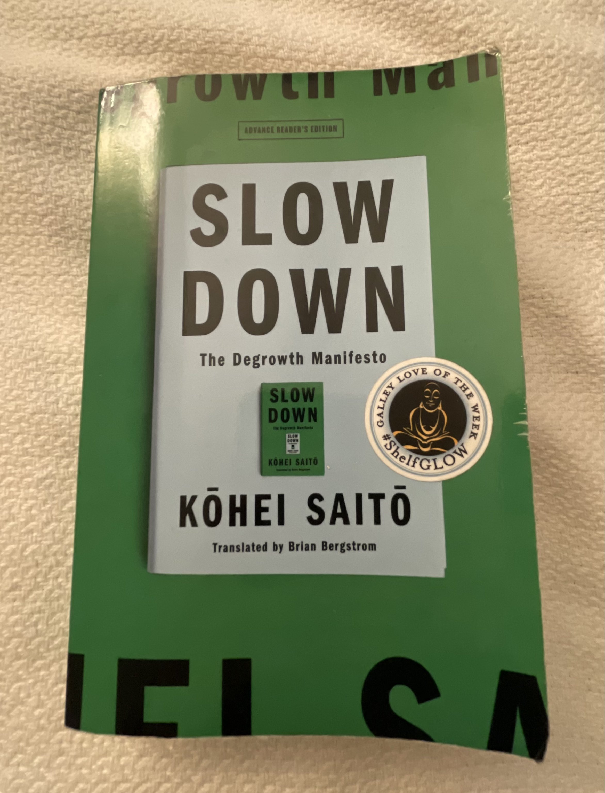
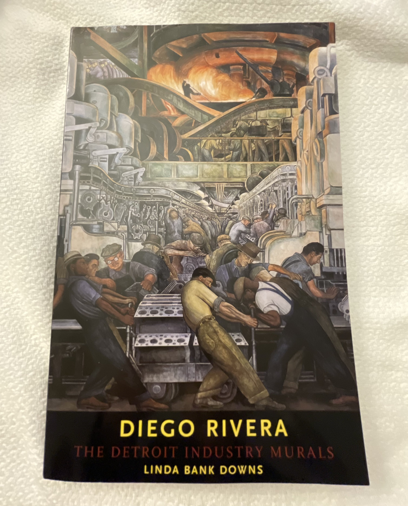
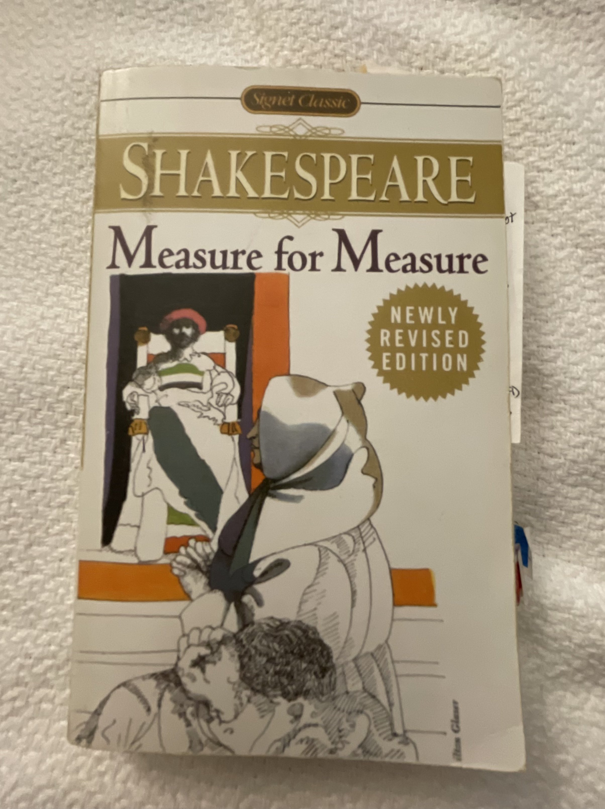

|  |  | ||
| The Wretched of the Earth by Frantz Fanon | Dubliners by James Joyce | Toot and Puddle by Hollie Hobbie | Introduction to Estuarine Hydrodynamics by Arnoldo Valle-Levinson |
|  |  | ||
| Venezuela: What Everyone Needs to Know by Miguel Tinker Salas | Slow Down The Degrowth Manifesto by Kohei Saito | Diego Rivera The Detroit Industry Murals by Linda Bank Downs | Chávez Venezuela and the New Latin America by Aleida Guevara |
|  | |||
| Measure for Measure by William Shakespeare | The Wind-Up Bird Chronicle by Haruki Murakami | The Metamorphosis and Other Stories by Franz Kafka | A Picture Book of Haiku by Suzuki Toshio |